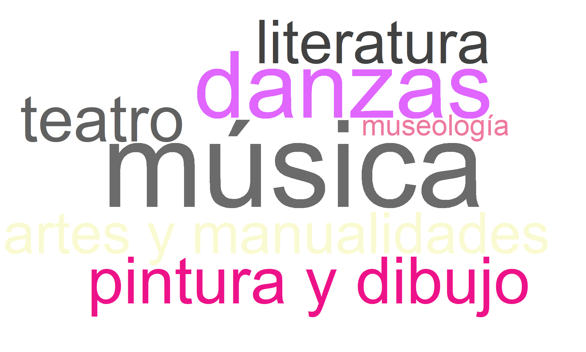
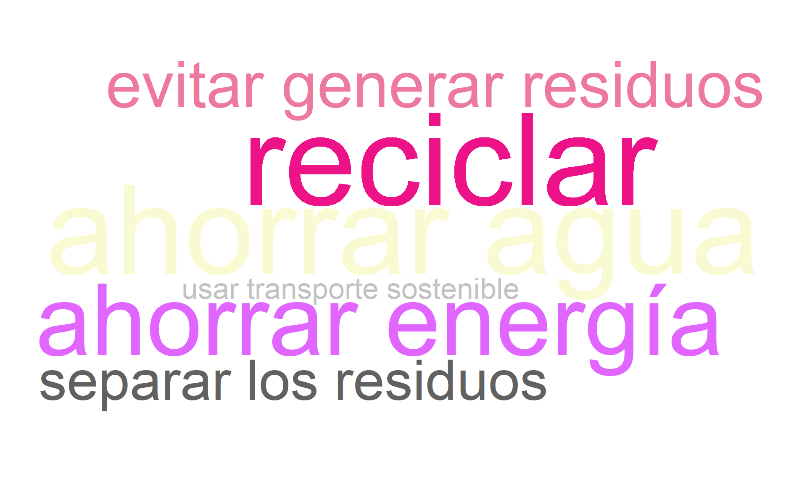
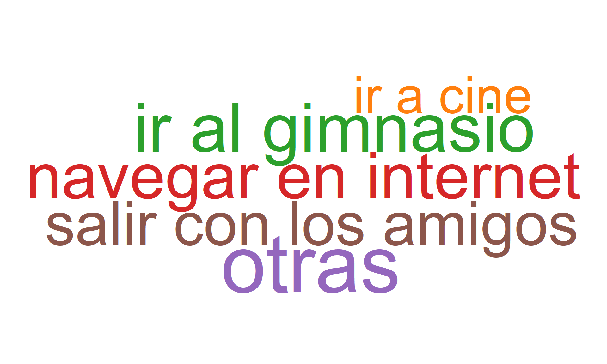
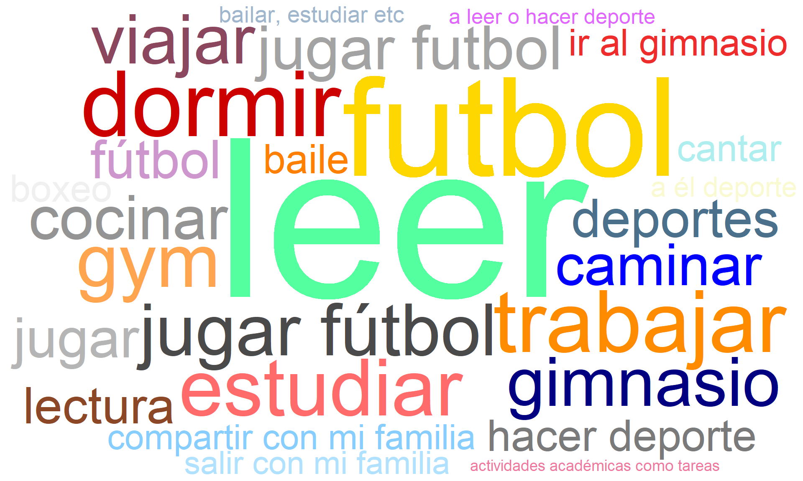
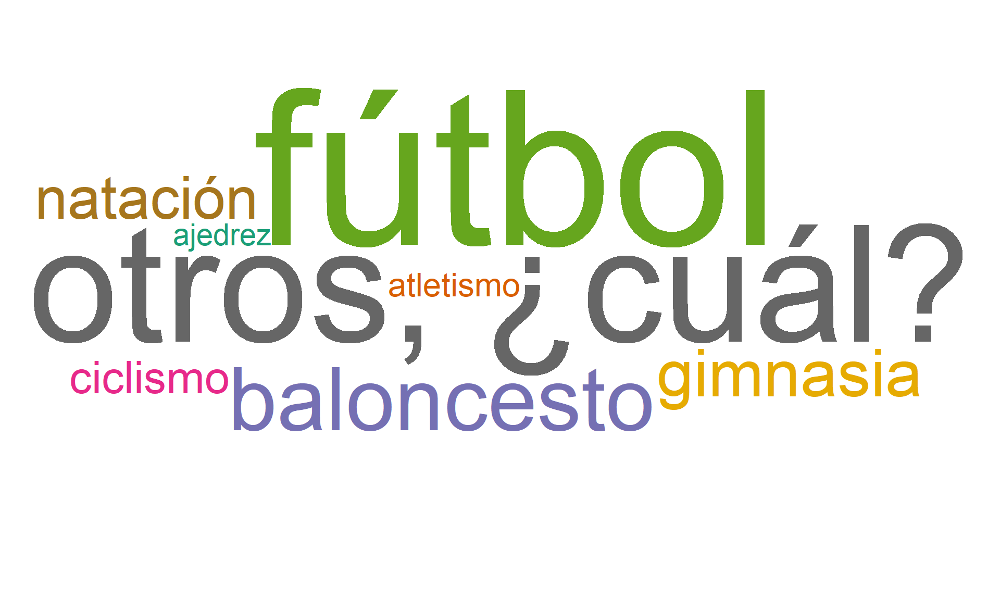
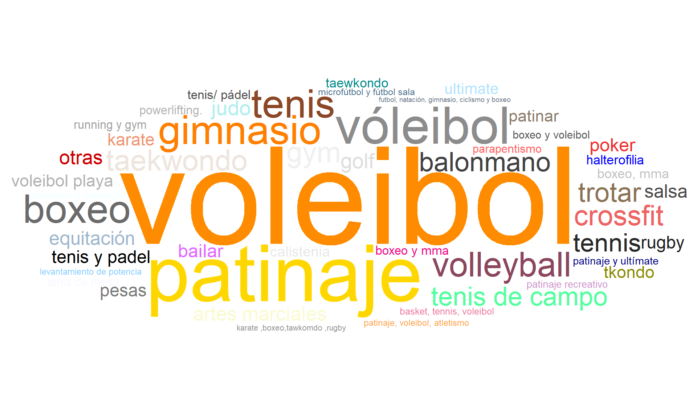
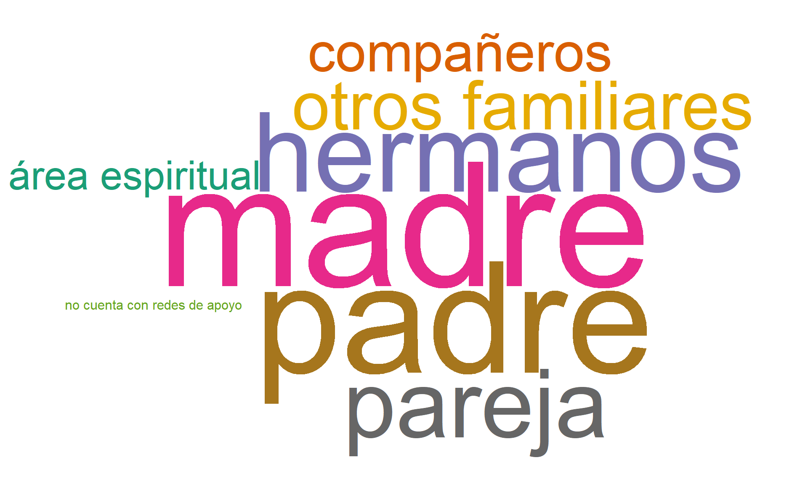
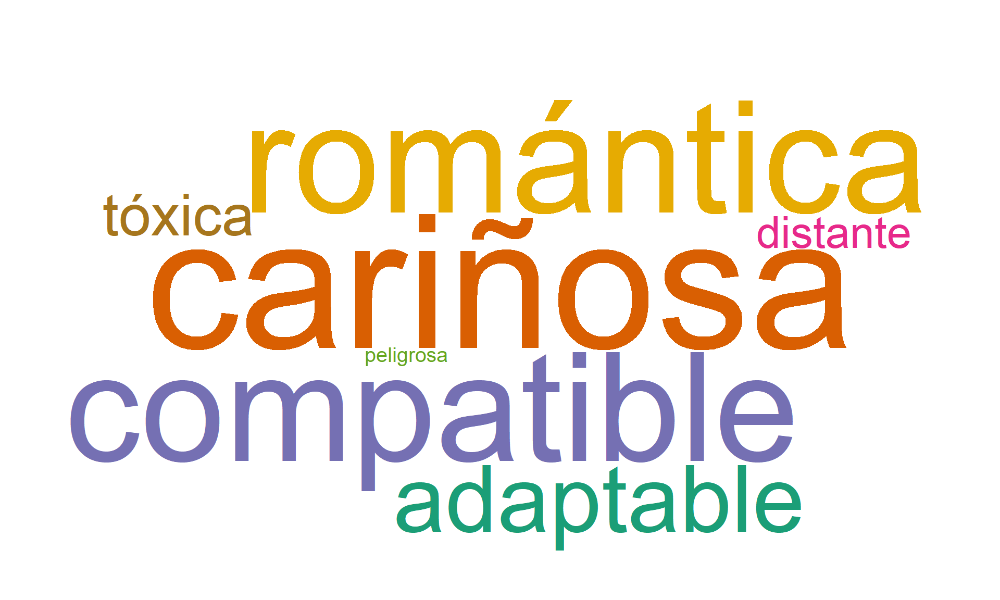

7 Secciones 4, 5 y 6: Fomento de la cultura, deportes y esparcimiento, y desarrollo humano
Aclaración importante
En los gráficos y filtros, el nombre Cúcuta aparecerá como Cucuta.
7.1 Sesión: Fomento de la cultura
7.1.1 ¿Cuáles de las siguientes disciplinas artísticas le atrae?
Descripción para todos los campus
La nube de palabras muestra que las disciplinas artísticas con mayor atracción entre los estudiantes son la música, danzas, pintura y dibujo, seguidas de literatura y teatro. También se evidencian intereses en áreas como artes y manualidades, y en menor medida, museología. La prominencia de música y danzas sugiere una preferencia por expresiones artísticas performativas y sensoriales.
7.1.2 ¿Cuenta con alguna habilidad artística?
Descripción para todos los campus
El 32.6% de los estudiantes afirma poseer alguna habilidad artística, mientras que el 67.4% no se identifica con alguna. Esto indica que una tercera parte de la población estudiantil se reconoce con capacidades en expresiones artísticas, lo que puede ser relevante para promover actividades o programas de desarrollo cultural dentro de la universidad.
7.1.3 Habilidad artística que posee.
Descripción para todos los campus
En esta nube de palabras predominan habilidades como dibujo, manualidades, pintura y danza. También destacan actividades relacionadas con la música como cantar, tocar instrumentos y bailar. Aunque en menor proporción, aparecen habilidades como escritura, canto, guitarra, piano y creatividad. Esto refleja una diversidad de expresiones artísticas desarrolladas por los estudiantes, siendo las visuales y escénicas las más comunes.
7.1.4 ¿Le gustaría dedicar tiempo de su actividad académica o laboral para aprender o fortalecer sus habilidades artísticas?
Descripción para todos los campus
El 72.8% de los estudiantes manifiesta contar con tiempo para desarrollar o fortalecer sus habilidades artísticas. Este dato contrasta con la proporción de estudiantes que actualmente no se identifican con una habilidad artística (67.4%), lo cual sugiere una oportunidad para fomentar programas de formación artística extracurriculares.
7.1.5 ¿Qué día de la semana tiene más disponibilidad de tiempo, para dedicarle a éste aprendizaje artístico?
Descripción para todos los campus
El día más mencionado para dedicar tiempo al aprendizaje artístico es el sábado (21.6%), seguido por lunes (16.8%) y viernes (15.6%). Días como miércoles y martes presentan menor frecuencia. Esto puede indicar que los estudiantes priorizan los fines de semana para actividades complementarias, posiblemente debido a menor carga académica o disponibilidad horaria.
7.1.6 ¿Cuáles de las siguientes prácticas ambientales practica usted diariamente?
Descripción para todos los campus
Las prácticas más mencionadas por los estudiantes son reciclar, ahorrar agua, evitar generar residuos y ahorrar energía. También se evidencian acciones como separar los residuos y usar transporte sostenible. Estas respuestas sugieren un nivel de conciencia ambiental entre los estudiantes, especialmente en torno al manejo de residuos y el consumo responsable de recursos.

7.2 Sesión. Deportes y Esparcimiento
7.2.1 ¿Realiza actividad física?
Descripción para todos los campus
El 49.8% de los estudiantes afirma realizar actividad física de manera regular, mientras que un 33.9% lo hace a veces. Solo el 16.2% no realiza ninguna. Esto indica que cerca de la mitad mantiene hábitos activos, y que existe una proporción importante que lo hace de forma intermitente, lo que abre espacio para incentivar la regularidad en estas prácticas.
7.2.2 ¿Cuántas veces a la semana realiza actividad física?
Descripción para todos los campus
La mayoría de los estudiantes que realizan actividad física lo hacen entre 1 y 2 veces por semana (41%). Un 37.7% la practica entre 3 y 4 veces, y solo el 21.4% supera las 5 veces a la semana. Estos resultados sugieren que, aunque una parte importante de la población estudiantil incorpora la actividad física en su rutina, en la mayoría de los casos esta se realiza con una frecuencia baja o moderada.
7.2.3 Su tiempo libre lo dedica, generalmente a:
Descripción para todos los campus
Las actividades más comunes en el tiempo libre de los estudiantes incluyen navegar en internet, ir al gimnasio, salir con los amigos, ir al cine y otras actividades diversas. La navegación en internet y la actividad física son las más destacadas, lo cual indica una combinación de intereses digitales y hábitos saludables.

7.2.4 ¿Qué otras actividades realiza durante su tiempo libre?
Descripción para todos los campus
Entre las respuestas abiertas, la lectura, el fútbol, caminar, dormir, estudiar, y asistir al gimnasio son recurrentes. También se menciona pasar tiempo en familia, cocinar, trabajar y realizar actividades académicas. Se evidencia un equilibrio entre actividades de ocio, académicas, sociales y de autocuidado.

7.2.5 ¿Le gusta la lectura?
Descripción para todos los campus
El 62.9% de los estudiantes manifestó que le gusta leer, mientras que un 37.1% no comparte ese interés. Esta proporción favorable hacia la lectura puede ser aprovechada para fomentar clubes de lectura o espacios de intercambio cultural dentro del campus.
7.2.6 ¿Cuántos libros lee al año?
Descripción para todos los campus
El grupo más representativo lee entre 1 y 2 libros al año (43.7%), seguido de quienes leen entre 3 y 4 libros (32.7%), y finalmente, quienes leen más de 4 libros (23.6%). Aunque la mayoría declara gusto por la lectura, la frecuencia lectora parece estar concentrada en niveles bajos o moderados, lo cual puede estar relacionado con limitaciones de tiempo o acceso a materiales.
7.2.7 ¿Practica algún deporte?
Descripción para todos los campus
El 42.6% de los estudiantes practica algún deporte, mientras que el 57.4% no lo hace. Esto indica que poco menos de la mitad tiene hábitos deportivos activos, lo que representa una oportunidad para ampliar las estrategias de promoción de la actividad física en la población estudiantil.
7.2.8 ¿Qué tipo de deporte practica con más frecuencia?
Descripción para todos los campus
El fútbol es el deporte más practicado, seguido de otras menciones como baloncesto, natación, atletismo, gimnasia y ciclismo. También aparece ajedrez, lo que muestra una amplitud en las concepciones de deporte, incluyendo actividades tanto físicas como mentales.

7.2.9 ¿Qué otros deportes practica?
Descripción para todos los campus
Además del fútbol y baloncesto, se destacan deportes como voleibol, patinaje, taekwondo, tenis, boxeo, crossfit y gimnasia. La diversidad de disciplinas es amplia, incluyendo también deportes menos comunes como parapentismo, halterofilia y rugby. Esto refleja una variedad de intereses deportivos en la comunidad estudiantil.

7.3 Sesión. Desarrollo humano
7.3.1 ¿Cuál es su estado de salud mental actualmente?
Descripción para todos los campus
La mayoría de los estudiantes califica su estado de salud mental como bueno (52.5%) o excelente (33.8%). Un 10.4% lo percibe como regular y un 3.3% no sabe cómo evaluarlo. En conjunto, más del 85% se siente en condiciones mentales favorables, aunque llama el interés el grupo minoritario que reporta estados menos óptimos.
7.3.2 ¿Siente apoyo emocional por parte de su familia?
Descripción para todos los campus
El 92.4% de los estudiantes reporta recibir apoyo emocional de su familia, mientras que solo un 7.6% indica no contar con este respaldo. Esta alta proporción sugiere que la mayoría de los estudiantes tiene una red afectiva estable desde el núcleo familiar, lo cual es un factor protector relevante para su bienestar emocional y académico.
7.3.3 ¿Quiénes considera que son sus redes de apoyo actualmente?
Descripción para todos los campus
Las figuras de apoyo más mencionadas por los estudiantes son la madre, el padre, los hermanos y la pareja. También se destacan los compañeros y otros familiares. En menor proporción aparecen el área espiritual y la mención explícita de no contar con redes de apoyo. Esto confirma que la familia sigue siendo el principal pilar emocional para los estudiantes, aunque también encuentran contención en su entorno social y académico.

7.3.4 ¿Tiene actualmente pareja sentimental?
Descripción para todos los campus
El 35.7% de los estudiantes manifiesta tener pareja sentimental, mientras que el 64.3% no. Esto indica que una proporción significativa se encuentra soltera.
7.3.5 ¿Cómo percibe que es su relación con su pareja?
Descripción para todos los campus
Quienes tienen pareja describen su relación con términos como cariñosa, compatible, romántica y adaptable. Sin embargo, también aparecen descripciones como tóxica, distante o peligrosa, aunque en menor frecuencia. Estos datos sugieren que, en general, la percepción es positiva, pero existe un grupo que podría requerir acompañamiento emocional o psicosocial.

7.3.6 ¿Cómo considera su relación con sus padres (con quien conviva-madre o padre):
Descripción para todos los campus
La mayoría de los estudiantes califica su relación con los padres como cercana (54.4%) o muy estrecha (29.6%). Un 12.4% reporta una relación muy estrecha pero conflictiva y solo un 3.6% la considera distante. En conjunto, más del 80% reporta una buena vinculación con sus padres, lo que coincide con el alto nivel de apoyo emocional ya descrito.
7.3.7 En su contexto familiar (familia de origen) usted experimenta o experimentó
Descripción para todos los campus
El 91.2% de los estudiantes indica no haber experimentado ningún tipo de violencia en su familia de origen. Las formas de violencia más reportadas, aunque en porcentajes bajos, son la psicológica (5.2%) y la física (2%). Violencias sexual, económica y patrimonial son mucho menos frecuentes. Estos resultados indican que la gran mayoría proviene de entornos familiares no violentos.
7.3.8 En su contexto familiar (familia conformada) usted experimenta o experimentó
Descripción para todos los campus
El 95.2% de los estudiantes aún no ha conformado una familia. Entre quienes sí lo han hecho, los porcentajes de violencia experimentada son bajos, pero destacan nuevamente la violencia psicológica (2.6%) y física (0.95%) como las más mencionadas.